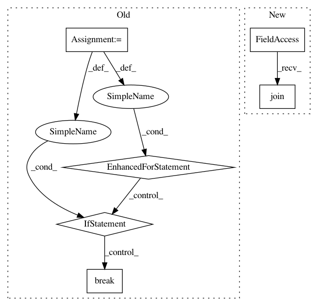

448e080c752a1b5f54c422401b41e824b0274a91,tensorflow/python/distribute/multi_process_lib.py,,_set_spawn_exe_path,#,89
Before Change
// -> tensorflow/python/my_test
path_to_use = None
guess_path = sys.argv[0][:-3]
guess_path = guess_path.split(os.sep)
for path_reduction in range(-1, -len(guess_path), -1):
possible_path = os.sep.join(guess_path[:path_reduction] +
[guess_path[-1]])
if os.access(possible_path, os.X_OK):
path_to_use = possible_path
break
// The binary can possibly have _gpu suffix.
possible_path += "_gpu"
if os.access(possible_path, os.X_OK):
path_to_use = possible_path
break
if path_to_use is None:
raise RuntimeError("Cannot determine binary path")
sys.argv[0] = path_to_use
// Note that this sets the executable for *all* contexts.
After Change
org_tensorflow_path = sys.argv[0][:sys.argv[0].rfind("/tensorflow")]
if org_tensorflow_path.endswith("/org_tensorflow"):
binary = os.environ["TEST_TARGET"][2:].replace(":", "/", 1)
possible_path = os.path.join(org_tensorflow_path, binary)
logging.info("Guessed test binary path: %s", possible_path)
if os.access(possible_path, os.X_OK):
path = possible_path
if path is None:
In pattern: SUPERPATTERN
Frequency: 4
Non-data size: 6
Instances
Project Name: tensorflow/tensorflow
Commit Name: 448e080c752a1b5f54c422401b41e824b0274a91
Time: 2020-11-17
Author: crccw@google.com
File Name: tensorflow/python/distribute/multi_process_lib.py
Class Name:
Method Name: _set_spawn_exe_path
Project Name: tensorflow/tensorflow
Commit Name: de336139770c6e9e035c0e402375efda48d75301
Time: 2020-11-18
Author: crccw@google.com
File Name: tensorflow/python/distribute/multi_process_lib.py
Class Name:
Method Name: _set_spawn_exe_path
Project Name: analysiscenter/batchflow
Commit Name: c7823a52d38202ea336ac8585bb440c01ce1f304
Time: 2020-08-14
Author: Tsimfer.SA@gazprom-neft.ru
File Name: batchflow/monitor.py
Class Name: ResourceMonitor
Method Name: stop
Project Name: kubeflow/kubeflow
Commit Name: 9741891897a68941e5b01dcdc20468701ea633db
Time: 2019-11-04
Author: gabrielwen@google.com
File Name: py/kubeflow/kubeflow/ci/kfctl_go_test_utils.py
Class Name:
Method Name: kfctl_deploy_kubeflow